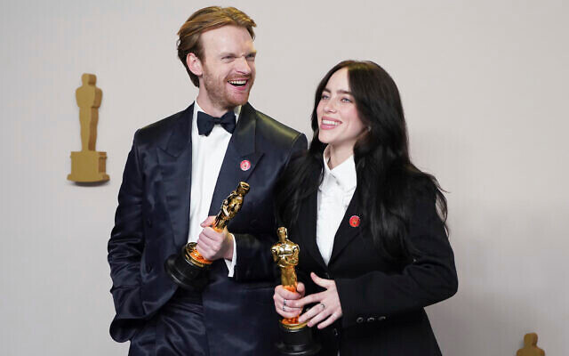

HER BACKGROUND
Billie Eilish, born Billie Eilish Pirate Baird O'Connell on December 18, 2001, in Los Angeles, California, has become one of the most influential and distinctive figures in the contemporary music scene. Her unique style, haunting voice, and introspective lyrics have garnered her a massive following worldwide. Beyond her music, Billie Eilish's lifestyle, family, and upbringing have played a significant role in shaping her persona and career.
Billie Eilish was born into a creative and artistic family, which deeply influenced her musical journey. Her parents, Maggie Baird and Patrick O'Connell, are both involved in the entertainment industry. Maggie Baird is an actress, musician, and screenwriter. She has appeared in various television shows and movies, and she also has experience as a voice actress. Maggie has been a guiding force in Billie and her brother's lives, homeschooling them and nurturing their artistic talents from a young age. Beyond her acting career, Maggie is also involved in environmental activism and often speaks about the importance of sustainability. Patrick O'Connell is an actor with roles in television and film, although he is not as widely recognized as Billie or Maggie. He has supported his children’s careers and has often spoken about the importance of fostering creativity and independence in them.
Billie has one sibling, Finneas O'Connell, who is a crucial figure in her music career. Finneas is a singer, songwriter, record producer, and actor. He co-writes and produces much of Billie’s music, contributing significantly to her distinctive sound. The two siblings share a close bond, and their collaboration has been pivotal in Billie’s success.

Achievements
-
Billie Eilish has rapidly become one of the most influential and critically acclaimed
artists of her generation, achieving remarkable success at a young age. Her breakthrough
came with the release of her debut single "Ocean Eyes" in 2015, which went viral and
set the stage for her future success. Eilish's debut EP, Don't Smile at Me (2017), was
well-received, but it was her debut studio album, When We All Fall Asleep, Where Do We
Go? (2019), that catapulted her to global stardom. The album, which features hits like
"Bad Guy," "Bury a Friend," and "When the Party's Over," topped the charts in multiple
countries and earned her several Grammy Awards, including Album of the Year, Record of
the Year, Song of the Year, and Best New Artist, making her the youngest artist to sweep
the four major Grammy categories. Eilish continued her success with the release of her
sophomore album, Happier Than Ever (2021), which also received critical acclaim and
debuted at number one on the Billboard 200. The title track, "Happier Than Ever,"
became an anthem, further solidifying her place in music history. In addition to her
musical achievements, Eilish made history by becoming the youngest artist to write and
record a James Bond theme song, "No Time to Die," which won an Academy Award for Best
Original Song. Throughout her career, Eilish has also been recognized for her impact on
fashion, mental health advocacy, and her candidness about personal struggles, making
her not only a musical powerhouse but also a significant cultural figure.
 Facebook
Facebook